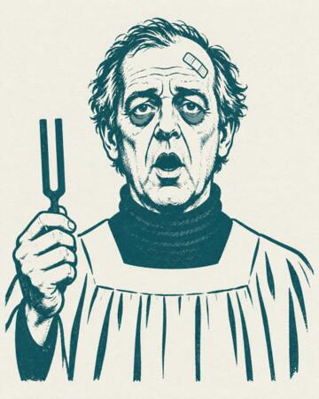

Vos interlocuteurs au quotidien. Les photos sont fournies par les intéressés ou, à défaut, par le service.
V. Morgue
Direction
N4 · signataire
M. Nyarlathotep
Consultant · supervise
périmètre à préciser
Mme Kravnik
Directrice des Ressources Humaines
N3 · guichet mardi 9 h – 9 h 20
— non communiqué —
Entretiens individuels
N3 · salle B · sur convocation
Mme Pin
Chargée de cohésion
ressources humaines

Oktav
Chef de chœur
département Liturgie
Bziz
Stagiaire
département Liturgie
Léo
Comptabilité
N1 · effectif : 1
Mme Solange
Entretien
services généraux · niveaux 1 à 4
Capitaine Berthe
Contrôle réglementaire
prestataire · sur réservation